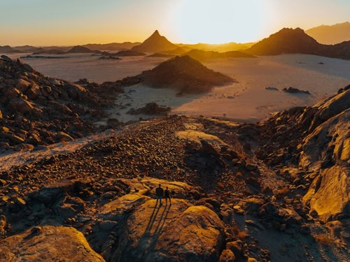

Volta River Trips
Have questions or ready to reserve? Our team is here to help you plan the perfect adventure on the Volta River.
Contact UsOur Rafting Trips

Adomi Gorge Run
Challenge yourself on Class III-IV rapids through the dramatic Adomi Gorge. This half-day trip covers 8 km of fast-moving water with expert guides leading the way. Perfect for thrill-seekers aged 16 and up.
Duration: 4 hours | Difficulty: Advanced

Akosombo Family Float
A gentle, scenic float ideal for families and first-time rafters. Glide along calm stretches of the Volta River with occasional mild rapids. Includes a riverside picnic stop and wildlife spotting opportunities.
Duration: 3 hours | Difficulty: Beginner

Sunset Rapids Expedition
Experience the magic of the Volta River at golden hour. This evening trip combines moderate rapids with breathtaking sunset views over the water. A memorable adventure for couples and small groups.
Duration: 2.5 hours | Difficulty: Intermediate
All Available Trips
| Trip Name | Duration | Difficulty | Min Age | Price (GHS) |
|---|---|---|---|---|
| Adomi Gorge Run | 4 hours | Advanced | 16 | 350 |
| Akosombo Family Float | 3 hours | Beginner | 8 | 200 |
| Sunset Rapids Expedition | 2.5 hours | Intermediate | 12 | 280 |
| Full-Day River Explorer | 6 hours | Intermediate | 14 | 450 |
| Group Team-Building Package | 5 hours | Beginner | 10 | 320 |